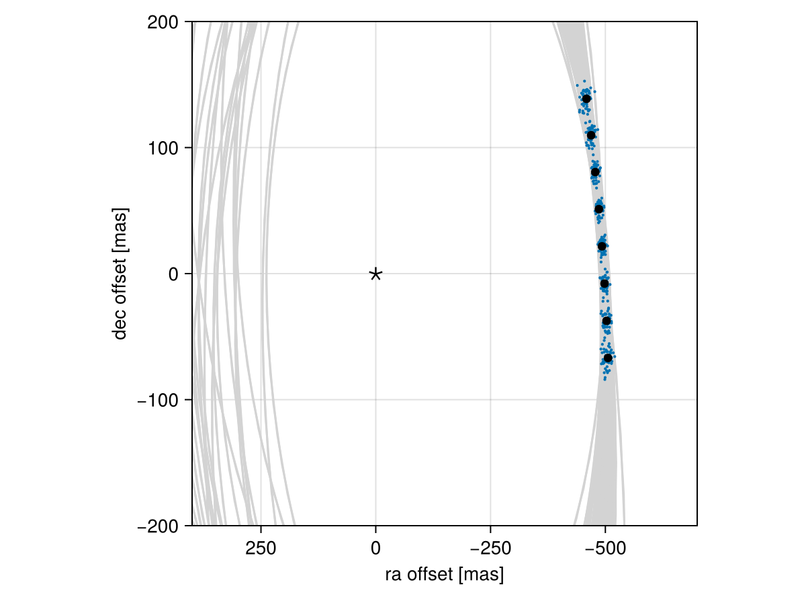

Posterior Predictive Checks
A posterior predictive check compares our true data with simulated data drawn from the posterior. This allows us to evaluate if the model is able to reproduce our observations appropriately. Samples drawn from the posterior predictive distribution should match the locations of the original data.
To demonstrate, we will fit a model to relative astrometry data:
using Octofitter
using Distributions
astrom_like = PlanetRelAstromLikelihood(Table(;
epoch= [50000,50120,50240,50360,50480,50600,50720,50840,],
ra = [-505.764,-502.57,-498.209,-492.678,-485.977,-478.11,-469.08,-458.896,],
dec = [-66.9298,-37.4722,-7.92755,21.6356, 51.1472, 80.5359, 109.729, 138.651,],
σ_ra = fill(10.0, 8),
σ_dec = fill(10.0, 8),
cor = fill(0.0, 8)
))
@planet b Visual{KepOrbit} begin
a ~ truncated(Normal(10, 4), lower=0.1, upper=100)
e ~ Uniform(0.0, 0.5)
i ~ Sine()
ω ~ UniformCircular()
Ω ~ UniformCircular()
θ ~ UniformCircular()
tp = θ_at_epoch_to_tperi(system,b,50420) # reference epoch for θ. Choose an MJD date near your data.
end astrom_like
@system Tutoria begin
M ~ truncated(Normal(1.2, 0.1), lower=0.1)
plx ~ truncated(Normal(50.0, 0.02), lower=0.1)
end b
model = Octofitter.LogDensityModel(Tutoria)
using Random
Random.seed!(0)
chain = octofit(model)Chains MCMC chain (1000×28×1 Array{Float64, 3}):
Iterations = 1:1:1000
Number of chains = 1
Samples per chain = 1000
Wall duration = 5.47 seconds
Compute duration = 5.47 seconds
parameters = M, plx, b_a, b_e, b_i, b_ωy, b_ωx, b_Ωy, b_Ωx, b_θy, b_θx, b_ω, b_Ω, b_θ, b_tp
internals = n_steps, is_accept, acceptance_rate, hamiltonian_energy, hamiltonian_energy_error, max_hamiltonian_energy_error, tree_depth, numerical_error, step_size, nom_step_size, is_adapt, loglike, logpost, tree_depth, numerical_error
Summary Statistics
parameters mean std mcse ess_bulk ess_tail r ⋯
Symbol Float64 Float64 Float64 Float64 Float64 Floa ⋯
M 1.1870 0.0973 0.0035 751.7045 614.0495 1.0 ⋯
plx 50.0008 0.0194 0.0006 1103.6590 656.3299 1.0 ⋯
b_a 11.6437 2.2946 0.1620 204.4077 329.6877 0.9 ⋯
b_e 0.1557 0.1113 0.0059 348.3699 421.8947 1.0 ⋯
b_i 0.6293 0.1605 0.0104 252.9289 293.8699 1.0 ⋯
b_ωy 0.0556 0.7288 0.0565 188.0764 686.0378 1.0 ⋯
b_ωx 0.1150 0.6937 0.0513 213.9462 622.9209 1.0 ⋯
b_Ωy 0.0019 0.7772 0.1167 56.8637 491.9470 1.0 ⋯
b_Ωx -0.0613 0.6489 0.0665 110.3175 467.6926 0.9 ⋯
b_θy 0.0745 0.0111 0.0004 942.1870 543.0436 0.9 ⋯
b_θx -1.0052 0.1025 0.0036 848.3508 577.0023 1.0 ⋯
b_ω 0.0878 1.7700 0.1206 267.3472 613.4899 1.0 ⋯
b_Ω -0.6740 1.7310 0.1658 133.6168 311.4587 1.0 ⋯
b_θ -1.4969 0.0077 0.0002 993.7982 663.6859 1.0 ⋯
b_tp 42548.4422 4975.2223 310.2581 276.5810 348.0616 1.0 ⋯
2 columns omitted
Quantiles
parameters 2.5% 25.0% 50.0% 75.0% 97.5%
Symbol Float64 Float64 Float64 Float64 Float64
M 1.0056 1.1210 1.1878 1.2598 1.3680
plx 49.9642 49.9870 50.0005 50.0147 50.0387
b_a 8.1441 10.0480 11.2250 12.8421 16.7162
b_e 0.0052 0.0645 0.1317 0.2347 0.4159
b_i 0.2649 0.5383 0.6460 0.7405 0.8957
b_ωy -1.0673 -0.6915 0.1753 0.7299 1.0836
b_ωx -1.0547 -0.5254 0.2222 0.7777 1.0576
b_Ωy -1.0893 -0.8103 0.0524 0.7918 1.0943
b_Ωx -1.0551 -0.6031 -0.1751 0.5096 1.0205
b_θy 0.0545 0.0665 0.0736 0.0818 0.0980
b_θx -1.2039 -1.0643 -1.0012 -0.9378 -0.8216
b_ω -2.9350 -1.4645 0.4163 1.3428 3.0048
b_Ω -3.0109 -2.4315 -0.4022 0.6958 2.9111
b_θ -1.5121 -1.5021 -1.4968 -1.4915 -1.4820
b_tp 30757.8162 39746.0168 43656.2126 46026.3466 49603.9218
We now have our posterior as approximated by the MCMC chain. Convert these posterior samples into orbit objects:
# Instead of creating orbit objects for all rows in the chain, just pick
# every twentieth row.
ii = 1:20:1000
orbits = Octofitter.construct_elements(chain, :b, ii)50-element Vector{Visual{KepOrbit{Float64}, Float64}}:
Visual{KepOrbit{Float64}, Float64}(KepOrbit(8.5, 0.198, 0.434, 2.79, 4.63, 45400.0, 1.23), 49.975008185364395, 4.127363005823508e6)
Visual{KepOrbit{Float64}, Float64}(KepOrbit(14.0, 0.0928, 0.827, -0.19, 3.63, 46900.0, 1.24), 50.027019838552796, 4.1230719052555687e6)
Visual{KepOrbit{Float64}, Float64}(KepOrbit(11.3, 0.0292, 0.592, 1.3, 3.97, 38200.0, 1.14), 49.983206182325546, 4.1266860562645723e6)
Visual{KepOrbit{Float64}, Float64}(KepOrbit(15.1, 0.0103, 0.868, 1.75, 3.47, 31900.0, 1.21), 49.99551899721908, 4.125669742751809e6)
Visual{KepOrbit{Float64}, Float64}(KepOrbit(11.0, 0.0362, 0.53, -0.549, 3.89, 47600.0, 1.14), 50.05012651525202, 4.1211684037830327e6)
Visual{KepOrbit{Float64}, Float64}(KepOrbit(10.6, 0.193, 0.494, 1.22, 4.99, 40900.0, 1.19), 49.99296183896944, 4.125880772265361e6)
Visual{KepOrbit{Float64}, Float64}(KepOrbit(11.4, 0.0943, 0.641, 2.48, 0.711, 47200.0, 1.12), 49.977772746282724, 4.1271346974008903e6)
Visual{KepOrbit{Float64}, Float64}(KepOrbit(13.7, 0.018, 0.793, -2.37, 3.35, 40100.0, 1.22), 50.000849323572076, 4.1252299268996567e6)
Visual{KepOrbit{Float64}, Float64}(KepOrbit(13.5, 0.221, 0.844, -0.43, 4.08, 48100.0, 1.29), 50.01585465860528, 4.123992310196621e6)
Visual{KepOrbit{Float64}, Float64}(KepOrbit(9.09, 0.18, 0.292, -0.428, 1.32, 44200.0, 1.13), 49.983292665660706, 4.12667891608724e6)
⋮
Visual{KepOrbit{Float64}, Float64}(KepOrbit(10.9, 0.0587, 0.702, -0.428, 4.36, 48700.0, 1.21), 49.99633305930425, 4.125602566798934e6)
Visual{KepOrbit{Float64}, Float64}(KepOrbit(8.9, 0.133, 0.338, 3.04, 4.56, 45500.0, 1.27), 50.00859871372661, 4.1245906765106646e6)
Visual{KepOrbit{Float64}, Float64}(KepOrbit(14.1, 0.372, 0.526, -2.95, 2.62, 33100.0, 1.01), 50.00713663035062, 4.1247112692073723e6)
Visual{KepOrbit{Float64}, Float64}(KepOrbit(15.2, 0.138, 0.835, 2.83, 3.34, 34800.0, 1.3), 49.97157429157737, 4.127646625589013e6)
Visual{KepOrbit{Float64}, Float64}(KepOrbit(10.1, 0.282, 0.457, -2.05, 2.49, 42300.0, 1.27), 49.97380652666485, 4.127462251448503e6)
Visual{KepOrbit{Float64}, Float64}(KepOrbit(9.35, 0.349, 0.647, 1.19, 0.0456, 44500.0, 1.2), 49.978928713811406, 4.127039240498962e6)
Visual{KepOrbit{Float64}, Float64}(KepOrbit(8.99, 0.234, 0.252, -2.72, 3.59, 43500.0, 0.958), 49.98913185457667, 4.126196882155211e6)
Visual{KepOrbit{Float64}, Float64}(KepOrbit(14.5, 0.0477, 0.792, 1.16, 3.42, 49700.0, 1.2), 49.98952291532775, 4.1261646035184544e6)
Visual{KepOrbit{Float64}, Float64}(KepOrbit(10.4, 0.177, 0.685, 1.76, 0.774, 46800.0, 1.29), 50.025307055996564, 4.123213072317862e6)Calculate and plot the location the planet would be at each observation epoch:
using CairoMakie
epochs = astrom_like.table.epoch' # transpose
x = raoff.(orbits, epochs)[:]
y = decoff.(orbits, epochs)[:]
fig = Figure()
ax = Axis(
fig[1,1], xlabel="ra offset [mas]", ylabel="dec offset [mas]",
xreversed=true,
aspect=1
)
for orbit in orbits
Makie.lines!(ax, orbit, color=:lightgrey)
end
Makie.scatter!(
ax,
x, y,
markersize=3,
)
fig
Makie.scatter!(ax, astrom_like.table.ra, astrom_like.table.dec,color=:black, label="observed")
Makie.scatter!(ax, [0],[0], marker='⋆', color=:black, markersize=20,label="")
Makie.xlims!(400,-700)
Makie.ylims!(-200,200)
fig
Looks like a great match to the data! Notice how the uncertainty around the middle point is lower than the ends. That's because the orbit's posterior location at that epoch is also constrained by the surrounding data points. We can know the location of the planet in hindsight better than we could measure it!
You can follow this same procedure for any kind of data modelled with Octofitter.